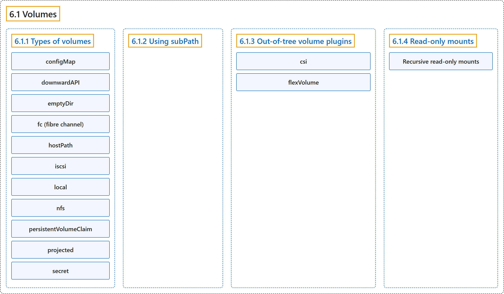

6.1 Volumes
Classification

Glossary
| Term | Definition | 中文翻译 | Source |
|---|---|---|---|
| 6.1 Volumes 卷 |
"Kubernetes volumes provide a way for containers in a Pod to access and share data via the filesystem." | Kubernetes 卷 为 Pod 中的容器提供一种方式，用来通过文件系统访问和共享数据。 | The Kubernetes Authors, n.d., "Volumes", para. 1 |
| 6.1.1 Types of volumes 卷的类型 |
"Kubernetes supports several types of volumes." | Kubernetes 支持多种类型的卷。 | The Kubernetes Authors, n.d., "Types of volumes", para. 1 |
| configMap configMap |
"A ConfigMap provides a way to inject configuration data into Pods." | ConfigMap 提供一种把配置数据注入 Pod 的方式。 | The Kubernetes Authors, n.d., "configMap", para. 1 |
| downwardAPI downwardAPI |
"A downwardAPI volume makes downward API data available to applications." |
downwardAPI 卷让应用可以使用 Downward API 数据。 |
The Kubernetes Authors, n.d., "downwardAPI", para. 1 |
| emptyDir emptyDir |
"For a Pod that defines an emptyDir volume, the volume is created when the Pod is assigned to a node." |
对于定义了 emptyDir 卷的 Pod 来说，该卷在 Pod 被分配到节点时创建。 |
The Kubernetes Authors, n.d., "emptyDir", para. 1 |
| fc (fibre channel) fc（光纤通道） |
"An fc volume type allows an existing fibre channel block storage volume to be mounted in a Pod." |
fc 卷类型允许把现有的光纤通道块存储卷挂载到 Pod 中。 |
The Kubernetes Authors, n.d., "fc (fibre channel)", para. 1 |
| hostPath hostPath |
"A hostPath volume mounts a file or directory from the host node's filesystem into your Pod." |
hostPath 卷会把主机节点文件系统中的文件或目录挂载到 Pod 中。 |
The Kubernetes Authors, n.d., "hostPath", para. 1 |
| iscsi iscsi |
"An iscsi volume allows an existing iSCSI (SCSI over IP) volume to be mounted into your Pod." |
iscsi 卷允许把现有的 iSCSI（基于 IP 的 SCSI）卷挂载到 Pod 中。 |
The Kubernetes Authors, n.d., "iscsi", para. 1 |
| local local |
"A local volume represents a mounted local storage device such as a disk, partition or directory." |
local 卷代表一个已挂载的本地存储设备，例如磁盘、分区或目录。 |
The Kubernetes Authors, n.d., "local", para. 1 |
| nfs nfs |
"An nfs volume allows an existing NFS (Network File System) share to be mounted into a Pod." |
nfs 卷允许把现有的 NFS（网络文件系统）共享挂载到 Pod 中。 |
The Kubernetes Authors, n.d., "nfs", para. 1 |
| persistentVolumeClaim persistentVolumeClaim |
"A persistentVolumeClaim volume is used to mount a PersistentVolume into a Pod." |
persistentVolumeClaim 卷用于把 PersistentVolume 挂载到 Pod 中。 |
The Kubernetes Authors, n.d., "persistentVolumeClaim", para. 1 |
| projected projected |
"A projected volume maps several existing volume sources into the same directory." | 投射卷会把若干现有卷源映射到同一个目录。 | The Kubernetes Authors, n.d., "projected", para. 1 |
| secret secret |
"A secret volume is used to pass sensitive information, such as passwords, to Pods." |
secret 卷用于向 Pod 传递密码等敏感信息。 |
The Kubernetes Authors, n.d., "secret", para. 1 |
| 6.1.2 Using subPath 使用 subPath |
"Sometimes, it is useful to share one volume for multiple uses in a single Pod." | 有时，把一个卷共享给多种用途（都在单个 Pod 内）很有用。 | The Kubernetes Authors, n.d., "Using subPath", para. 1 |
| 6.1.3 Out-of-tree volume plugins 树外卷插件 |
"The out-of-tree volume plugins include Container Storage Interface (CSI), and also FlexVolume (which is deprecated)." | 树外卷插件包括容器存储接口（CSI），以及 FlexVolume（已弃用）。 | The Kubernetes Authors, n.d., "Out-of-tree volume plugins", para. 1 |
| csi csi |
"Container Storage Interface (CSI) defines a standard interface for container orchestration systems (like Kubernetes) to expose arbitrary storage systems to their container workloads." | 容器存储接口（CSI）定义了一个标准接口，让容器编排系统（如 Kubernetes）把任意存储系统暴露给其容器工作负载。 | The Kubernetes Authors, n.d., "csi", para. 1 |
| flexVolume flexVolume |
"FlexVolume is an out-of-tree plugin interface that uses an exec-based model to interface with storage drivers." | FlexVolume 是一个树外插件接口，使用基于 exec 的模型与存储驱动交互。 | The Kubernetes Authors, n.d., "flexVolume (deprecated)", para. 1 |
| 6.1.4 Read-only mounts 只读挂载 |
"A mount can be made read-only by setting the .spec.containers[*].volumeMounts[*].readOnly field to true." |
挂载可以变为只读，方法是把 .spec.containers[*].volumeMounts[*].readOnly 字段设为 true。 |
The Kubernetes Authors, n.d., "Read-only mounts", para. 1 |
| Recursive read-only mounts 递归只读挂载 |
(context) "Recursive read-only mounts can be enabled by setting the RecursiveReadOnlyMounts feature gate for kubelet and kube-apiserver" |
（语境）递归只读挂载可以通过为 kubelet 和 kube-apiserver 设置 RecursiveReadOnlyMounts 特性门控来启用 |
The Kubernetes Authors, n.d., "Recursive read-only mounts", para. 2 |
References
The Kubernetes Authors. (n.d.). Volumes. Kubernetes Documentation. Retrieved October 31, 2026, from https://kubernetes.io/docs/concepts/storage/volumes/